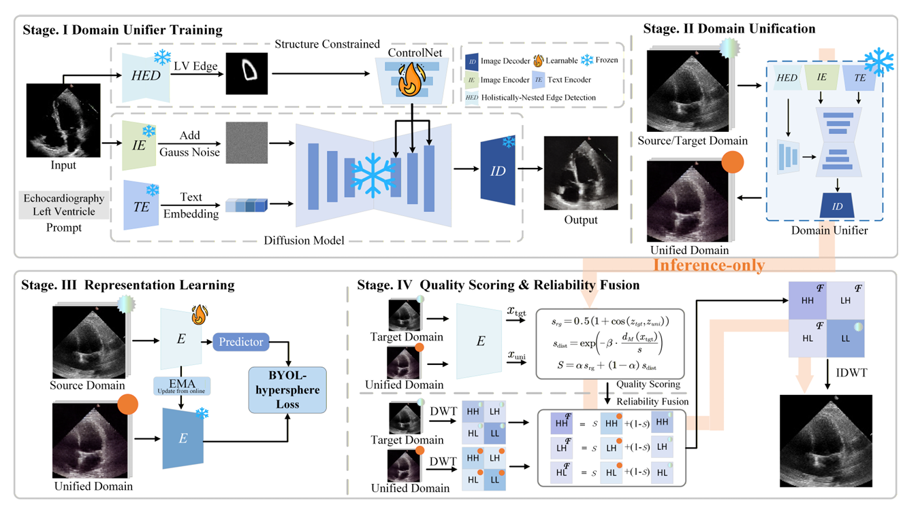

The Intelligent Medical Computing Laboratory (IMCL, also known as GEMLab) has highlighted Proactive Domain Unification (PDU), a plug-and-play inference framework for robust left-ventricle segmentation in echocardiography across centres. The work has been selected for MICCAI 2026.
Accurate left-ventricle segmentation is a foundation for automated cardiac-function assessment and supports clinical measurements such as ejection fraction (EF) and global longitudinal strain (GLS). Echocardiography is highly sensitive to equipment, scanning settings, operators, manufacturers, and post-processing. Differences in speckle, gain, contrast, and texture can therefore cause a model trained at one centre to deteriorate when deployed at a new hospital or on a different ultrasound system.
Why cross-centre echocardiography segmentation fails
Models trained on a single distribution, such as EchoNet, can lose substantial performance when applied directly to CAMUS or real clinical data. Existing domain-generalization, unsupervised domain-adaptation, and augmentation methods generally make the model passively less sensitive to domain shifts. When the target appearance is far from the source domain, this passive robustness may be insufficient.
Generative image translation can move a target image toward the source style, but it may introduce geometric drift, false boundaries, or structural artefacts. These risks are especially important for cardiac segmentation, where small boundary errors can affect downstream measurements. PDU therefore asks a different question: can the deployment input be actively unified with the source-domain appearance while explicitly protecting real anatomy?
Active unification at inference time
PDU first trains a structure-conditioned generator on the source domain. During deployment, it uses left-ventricle boundary conditions to generate a source-style version of a heterogeneous target image. It then estimates how reliable that generated result is and performs reliability-guided fusion in the wavelet domain before sending the final input to a frozen segmentation network.

Structure-conditioned generation
PDU uses a heart-ultrasound HED model to extract left-ventricle boundary cues and feeds these structural conditions into a ControlNet-conditioned diffusion model. The unifier learns the source-domain appearance during training. At test time, it generates an image closer to that appearance while respecting the original boundary conditions.
Unlike unconstrained style transfer, the goal is not to redraw the heart. The generation process adjusts domain-related appearance such as speckle, texture, and contrast while maintaining the target patient’s underlying anatomy as faithfully as possible.
Reliability-guided wavelet fusion
A structure condition does not make every generated image trustworthy. If a target image is far from the source domain or its boundary cues are unreliable, the generated result may still contain artefacts. PDU therefore uses a BYOL-style self-supervised encoder to learn the representation relationship between source-domain originals and their unified versions.
Reliability is estimated from semantic consistency between the original target image and its unified image, together with the target image’s distance from the source-domain prototypes. The resulting score controls how much generated information is used. A reliable unified image can contribute more source-style appearance; a doubtful result receives less weight.
Fusion is performed in the two-dimensional Haar wavelet domain. The low-frequency LL component, which carries the overall anatomical layout, is inherited directly from the original target image. High-frequency LH, HL, and HH components, which capture edges, texture, and speckle, receive source-style residual information adaptively according to reliability. This avoids sending the generated image directly to the segmentation network and reduces the risk of geometric drift.
Cross-domain validation
The study uses EchoNet as the source domain and evaluates transfer on the public CAMUS dataset and the private clinical dataset PrivateEcho. PrivateEcho contains 203 annotated ultrasound images from 20 patients, including previously unseen non-ED and non-ES cardiac-cycle frames. All segmentation models are trained only on EchoNet; target-domain testing uses no labels and does not update the segmentation network.
In the EchoNet-to-CAMUS setting, PDU consistently improves six architectures: U-Net, UNext, Swin-UNet, VM-UNet, U-KAN, and SegMamba. The average Dice score increases by 6.0 percentage points and average HD95 decreases by 4.7 mm. SegMamba combined with PDU reaches a Dice score of 88.42%. On PrivateEcho, PDU also improves several models, including an increase in U-Net Dice from 76.67% to 82.25%.
Compared with the in-domain upper bound obtained using target-domain supervision, PDU recovers 67.2% to 83.5% of the cross-domain performance gap on three representative architectures. It does not reduce performance on the source-domain EchoNet and improves results at both end-diastolic and end-systolic phases. Comparisons with some UDA methods use different adaptation protocols and should not be interpreted as strictly matched comparisons.
A plug-and-play direction for medical imaging
PDU rethinks medical-image domain generalization: instead of asking a segmentation model to passively adapt to every unknown appearance, it actively maps the deployment input into a source-domain space familiar to the model. Structure-conditioned diffusion, reliability estimation, and wavelet fusion together adjust domain-related texture while preserving low-frequency anatomy.
As a plug-and-play module, PDU requires no target-domain labels and no test-time update of the segmentation network. Its results across public and private echocardiography data demonstrate a robust approach to cross-centre segmentation and suggest a broader research direction for proactive input-domain unification in medical imaging.
Paper: Proactive Domain Unification for Robust Echocardiography Segmentation
Authors: Xintao Pang, Jinlin Yang, Yue Sun, Zhifan Gao, Wei Li, and Tao Tan.